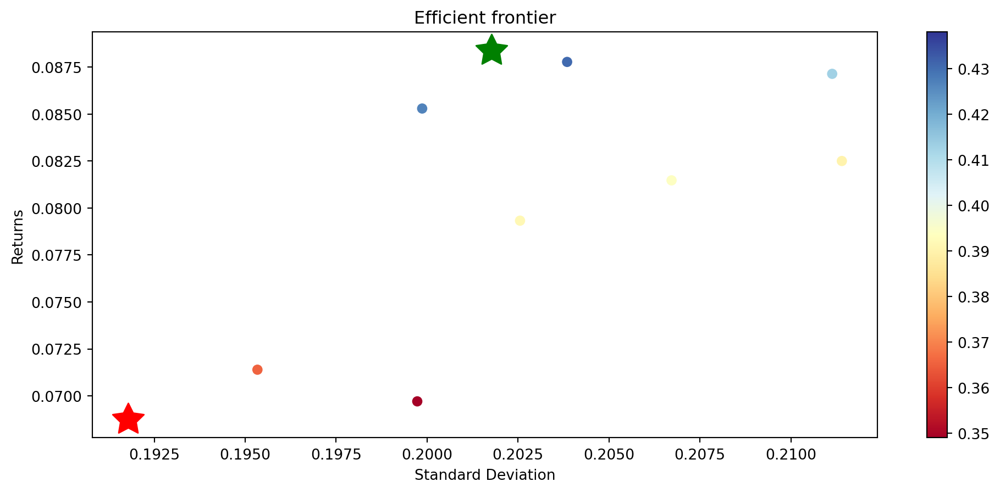

import pandas as pd
import numpy as np
import matplotlib.pyplot as plt5 Portfolio management
In this section we use the filtered stocks of the previous chapter to build a Markowitz portfolio (Markowitz 1952). First we will apply the example for a two stock portfolio. Then, we extend the analysis for all the stocks.
data=pd.read_csv("https://raw.githubusercontent.com/abernal30/AFP_py/refs/heads/main/data/portfolio.csv",index_col=0) # en caso de no haber realizado el ejercicio de la seción anterior
data.head()| ABT.Close | BAC.PE.Close | C.PJ.Close | NVS.Close | UNH.Close | WFC.PL.Close | CSCO.Close | JPM.PD.Close | WFC.PQ.Close | MCD.Close | ... | BML.PG.Close | TCTZF.Close | TCEHY.Close | CVX.Close | SHEL.Close | AVGO.Close | INTC.Close | NVSEF.Close | ADBE.Close | TMUS.Close | |
|---|---|---|---|---|---|---|---|---|---|---|---|---|---|---|---|---|---|---|---|---|---|
| date | |||||||||||||||||||||
| 01/02/2020 | 86.949997 | 24.511700 | 28.570000 | 94.949997 | 292.500000 | 1452.510010 | 48.419998 | 27.639999 | 27.629999 | 200.789993 | ... | 21.480000 | 49.880001 | 49.880001 | 121.430000 | 59.740002 | 322.390015 | 60.840000 | 94.800003 | 334.429993 | 78.589996 |
| 01/03/2020 | 85.889999 | 24.600000 | 28.719999 | 94.790001 | 289.540009 | 1457.000000 | 47.630001 | 27.660000 | 27.780001 | 200.080002 | ... | 21.420000 | 48.930000 | 49.029999 | 121.010002 | 60.209999 | 314.190002 | 60.099998 | 93.250000 | 331.809998 | 78.169998 |
| 01/06/2020 | 86.339996 | 24.497101 | 28.719999 | 95.430000 | 291.549988 | 1467.469971 | 47.799999 | 27.580000 | 27.690001 | 202.330002 | ... | 21.469999 | 48.700001 | 48.770000 | 120.599998 | 60.959999 | 313.720001 | 59.930000 | 94.349998 | 333.709991 | 78.620003 |
| 01/07/2020 | 85.860001 | 24.510000 | 28.629999 | 94.480003 | 289.790009 | 1473.500000 | 47.490002 | 27.500000 | 27.500000 | 202.630005 | ... | 21.429300 | 49.770000 | 49.779999 | 119.059998 | 60.400002 | 312.640015 | 58.930000 | 95.000000 | 333.390015 | 78.919998 |
| 01/08/2020 | 86.209999 | 24.440001 | 28.709999 | 94.480003 | 295.899994 | 1480.000000 | 47.520000 | 27.549999 | 27.559999 | 205.910004 | ... | 21.930000 | 49.650002 | 49.650002 | 117.699997 | 59.689999 | 308.739990 | 58.970001 | 94.720001 | 337.869995 | 79.419998 |
5 rows × 34 columns
The prices returns.
ret_all=data.pct_change()
ret_all.head()| ABT.Close | BAC.PE.Close | C.PJ.Close | NVS.Close | UNH.Close | WFC.PL.Close | CSCO.Close | JPM.PD.Close | WFC.PQ.Close | MCD.Close | ... | BML.PG.Close | TCTZF.Close | TCEHY.Close | CVX.Close | SHEL.Close | AVGO.Close | INTC.Close | NVSEF.Close | ADBE.Close | TMUS.Close | |
|---|---|---|---|---|---|---|---|---|---|---|---|---|---|---|---|---|---|---|---|---|---|
| date | |||||||||||||||||||||
| 01/02/2020 | NaN | NaN | NaN | NaN | NaN | NaN | NaN | NaN | NaN | NaN | ... | NaN | NaN | NaN | NaN | NaN | NaN | NaN | NaN | NaN | NaN |
| 01/03/2020 | -0.012191 | 0.003602 | 0.005250 | -0.001685 | -0.010120 | 0.003091 | -0.016316 | 0.000724 | 0.005429 | -0.003536 | ... | -0.002793 | -0.019046 | -0.017041 | -0.003459 | 0.007867 | -0.025435 | -0.012163 | -0.016350 | -0.007834 | -0.005344 |
| 01/06/2020 | 0.005239 | -0.004183 | 0.000000 | 0.006752 | 0.006942 | 0.007186 | 0.003569 | -0.002892 | -0.003240 | 0.011246 | ... | 0.002334 | -0.004701 | -0.005303 | -0.003388 | 0.012456 | -0.001496 | -0.002829 | 0.011796 | 0.005726 | 0.005757 |
| 01/07/2020 | -0.005559 | 0.000527 | -0.003134 | -0.009955 | -0.006037 | 0.004109 | -0.006485 | -0.002901 | -0.006862 | 0.001483 | ... | -0.001896 | 0.021971 | 0.020709 | -0.012769 | -0.009186 | -0.003443 | -0.016686 | 0.006889 | -0.000959 | 0.003816 |
| 01/08/2020 | 0.004076 | -0.002856 | 0.002794 | 0.000000 | 0.021084 | 0.004411 | 0.000632 | 0.001818 | 0.002182 | 0.016187 | ... | 0.023365 | -0.002411 | -0.002611 | -0.011423 | -0.011755 | -0.012474 | 0.000679 | -0.002947 | 0.013438 | 0.006336 |
5 rows × 34 columns
5.1 Portfolio of two stocks
We will estimate the return, standard deviation and Sharpe ratio for a portfolio of two stocks. And also making an aleatory weight.
ret_two=ret_all.loc[:,("CMCSA.Close","TMUS.Close")]
ret_two.head()| CMCSA.Close | TMUS.Close | |
|---|---|---|
| date | ||
| 01/02/2020 | NaN | NaN |
| 01/03/2020 | -0.007935 | -0.005344 |
| 01/06/2020 | -0.007554 | 0.005757 |
| 01/07/2020 | 0.005821 | 0.003816 |
| 01/08/2020 | 0.010238 | 0.006336 |
We know that the arithmetic mean portfolio return for two assets
\[r_{p}= w_{A}*r_{A}+w_{B}*r_{B}\]
Where - \(r_{p}\) is the portfolio return - \(w_{A}, w_{B}\) are the weight of the asset A, B respectively - \(r_{A},r_{B}\) are the returns of the asset A, B respectively
The expected return (mean) for two assets:
ret_two.mean()CMCSA.Close 0.000147
TMUS.Close 0.001091
dtype: float64Now we create the portfolio random weights
np.random.seed(1) # To get the same random number, the number 1, it is because Python has many predefined random numbers.
ran=np.random.rand(2) #the simulation of two random numbers, the two, is because we require two random numbers
# The following is so that it always adds up to 100% or 1
su=np.sum(ran) #
we=ran/su # this are the weights
wearray([0.36666223, 0.63333777])To review that the sum is 100% or 1.00
sum(we)1.0We first estimate the portfolio return manually
0.000147*0.36666223+0.001091*0.63333777 0.00074487085488Now we estimate the portfolio return with a Python function, which apply for two or more assets.
rend_d=np.sum(ret_two.mean()*we)
rend_d0.0007447264667679712To estimate the annualized return
rend_a=(1+rend_d)**252-1
rend_a0.20635235323618217Portfolio variance for two assets
\[\sigma_{p}^2= w_{A}^2*\sigma_{A}^2+w_{B}^2*\sigma_{B}^2+ 2 * cov(r_{A},r_{B})w_{A}*w_{B}\]
Where: - \(\sigma_{p}^2\) is the portfolio variance - \(w_{A}, w_{B}\) are the weigth of the asset A, B respectively - \(\sigma_{A}^2, \sigma_{B}^2\) are the variance of asset A, B respectively - \(cov(r_{A},r_{B})\) is the covariance of the return of the asset A and B
Covariance matrix of the returns
cov=ret_two.cov()
cov| CMCSA.Close | TMUS.Close | |
|---|---|---|
| CMCSA.Close | 0.000386 | 0.000237 |
| TMUS.Close | 0.000237 | 0.000451 |
This is the daily portfolio variance mannually
0.000386*pow(0.36666223,2)+0.000451*pow(0.63333777,2)+2*0.000237*0.36666223*0.633337770.00034287071785981196This is the daily portfolio variance using Python formulas, which apply for two or more assets.
varp_day=np.dot(np.dot(we,cov),we.T)
varp_day0.0003429252889213939This is the annual portfolio standard deviation using Python formulas, which apply for two or more assets.
desvp_a=np.sqrt(varp_day)*np.sqrt(252)
desvp_a0.2939679792225529The Shape ratio
\[Shape\ ratio=\frac{portfolio\ return - risk\ free\ rate}{portfolio\ standard\ deviation} \]
r=0 # risk free
sharpe=(rend_a-r)/desvp_a
sharpe 0.70195520539997315.2 Portfolio of many assets
Here we get together the code of the previous section to do a Loop For for doing the same procedure for all the stocks inside the data frame ret_all.
retp=[]
sdp=[]
sharp=[]
wep=[]
n=10000 # number de simulations
r=0
for i in range(n):
ran=np.random.rand(ret_all.shape[1])
su=np.sum(ran)
we=ran/su
rend_d=np.sum(ret_all.mean()*we)
rend_a=(1+rend_d)**252-1
cov=ret_all.cov()
varp_day=np.dot(np.dot(we,cov),we.T)
desvp_a=np.sqrt(varp_day)*np.sqrt(252)
sharpe=(rend_a-r)/desvp_a
retp.append(rend_a)
sdp.append(desvp_a)
sharp.append(sharpe)
wep.append(we) Also, we create a data frame with the result, the name of the portfolio standard deviation must be Stdev and Sharpe ratio Sharpe
metrics=pd.DataFrame({"Return":retp,"Stdev":sdp,"Sharpe":sharp})
metrics.head()| Return | Stdev | Sharpe | |
|---|---|---|---|
| 0 | 0.082503 | 0.211402 | 0.390267 |
| 1 | 0.085297 | 0.199864 | 0.426775 |
| 2 | 0.087777 | 0.203849 | 0.430599 |
| 3 | 0.069707 | 0.199730 | 0.349008 |
| 4 | 0.088389 | 0.201766 | 0.438078 |
And a data frame with the weights.
weights_df=pd.DataFrame(wep,columns=ret_all.columns)
weights_df.head()| ABT.Close | BAC.PE.Close | C.PJ.Close | NVS.Close | UNH.Close | WFC.PL.Close | CSCO.Close | JPM.PD.Close | WFC.PQ.Close | MCD.Close | ... | BML.PG.Close | TCTZF.Close | TCEHY.Close | CVX.Close | SHEL.Close | AVGO.Close | INTC.Close | NVSEF.Close | ADBE.Close | TMUS.Close | |
|---|---|---|---|---|---|---|---|---|---|---|---|---|---|---|---|---|---|---|---|---|---|
| 0 | 0.000008 | 0.020231 | 0.009820 | 0.006179 | 0.012464 | 0.023124 | 0.026550 | 0.036056 | 0.028051 | 0.045853 | ... | 0.005691 | 0.002613 | 0.011364 | 0.058762 | 0.006581 | 0.028179 | 0.064099 | 0.035678 | 0.046298 | 0.021113 |
| 1 | 0.043126 | 0.052432 | 0.001149 | 0.047125 | 0.062121 | 0.047000 | 0.017618 | 0.049583 | 0.006485 | 0.028137 | ... | 0.006429 | 0.026011 | 0.043623 | 0.026019 | 0.003138 | 0.033665 | 0.041700 | 0.032346 | 0.059340 | 0.036848 |
| 2 | 0.048349 | 0.007357 | 0.007454 | 0.043211 | 0.021283 | 0.008850 | 0.049639 | 0.018612 | 0.040183 | 0.038854 | ... | 0.021843 | 0.012685 | 0.048348 | 0.030703 | 0.000154 | 0.033029 | 0.017482 | 0.028207 | 0.047414 | 0.019121 |
| 3 | 0.052457 | 0.035991 | 0.000913 | 0.053664 | 0.039891 | 0.057583 | 0.009951 | 0.007918 | 0.053846 | 0.040233 | ... | 0.007169 | 0.016119 | 0.033820 | 0.055982 | 0.032393 | 0.001077 | 0.046227 | 0.013451 | 0.046600 | 0.022394 |
| 4 | 0.057787 | 0.049996 | 0.037223 | 0.009131 | 0.004010 | 0.008120 | 0.002981 | 0.007193 | 0.015104 | 0.047712 | ... | 0.041487 | 0.055474 | 0.010492 | 0.001243 | 0.004686 | 0.032546 | 0.040575 | 0.038067 | 0.021237 | 0.066157 |
5 rows × 34 columns
We can prove that the sum of each row, which represents the weights for each stock for a simulation, is one.
weights_df.iloc[0,].sum()1.0We concatenate the data frame with the metrics with the data frame with the weights.
port=pd.concat([metrics,weights_df],axis=1)
port.head()| Return | Stdev | Sharpe | ABT.Close | BAC.PE.Close | C.PJ.Close | NVS.Close | UNH.Close | WFC.PL.Close | CSCO.Close | ... | BML.PG.Close | TCTZF.Close | TCEHY.Close | CVX.Close | SHEL.Close | AVGO.Close | INTC.Close | NVSEF.Close | ADBE.Close | TMUS.Close | |
|---|---|---|---|---|---|---|---|---|---|---|---|---|---|---|---|---|---|---|---|---|---|
| 0 | 0.082503 | 0.211402 | 0.390267 | 0.000008 | 0.020231 | 0.009820 | 0.006179 | 0.012464 | 0.023124 | 0.026550 | ... | 0.005691 | 0.002613 | 0.011364 | 0.058762 | 0.006581 | 0.028179 | 0.064099 | 0.035678 | 0.046298 | 0.021113 |
| 1 | 0.085297 | 0.199864 | 0.426775 | 0.043126 | 0.052432 | 0.001149 | 0.047125 | 0.062121 | 0.047000 | 0.017618 | ... | 0.006429 | 0.026011 | 0.043623 | 0.026019 | 0.003138 | 0.033665 | 0.041700 | 0.032346 | 0.059340 | 0.036848 |
| 2 | 0.087777 | 0.203849 | 0.430599 | 0.048349 | 0.007357 | 0.007454 | 0.043211 | 0.021283 | 0.008850 | 0.049639 | ... | 0.021843 | 0.012685 | 0.048348 | 0.030703 | 0.000154 | 0.033029 | 0.017482 | 0.028207 | 0.047414 | 0.019121 |
| 3 | 0.069707 | 0.199730 | 0.349008 | 0.052457 | 0.035991 | 0.000913 | 0.053664 | 0.039891 | 0.057583 | 0.009951 | ... | 0.007169 | 0.016119 | 0.033820 | 0.055982 | 0.032393 | 0.001077 | 0.046227 | 0.013451 | 0.046600 | 0.022394 |
| 4 | 0.088389 | 0.201766 | 0.438078 | 0.057787 | 0.049996 | 0.037223 | 0.009131 | 0.004010 | 0.008120 | 0.002981 | ... | 0.041487 | 0.055474 | 0.010492 | 0.001243 | 0.004686 | 0.032546 | 0.040575 | 0.038067 | 0.021237 | 0.066157 |
5 rows × 37 columns
Sort the values to wet the maximum Sharpe
port.sort_values(by="Sharpe",ascending=False).head()| Return | Stdev | Sharpe | ABT.Close | BAC.PE.Close | C.PJ.Close | NVS.Close | UNH.Close | WFC.PL.Close | CSCO.Close | ... | BML.PG.Close | TCTZF.Close | TCEHY.Close | CVX.Close | SHEL.Close | AVGO.Close | INTC.Close | NVSEF.Close | ADBE.Close | TMUS.Close | |
|---|---|---|---|---|---|---|---|---|---|---|---|---|---|---|---|---|---|---|---|---|---|
| 2194 | 0.133390 | 0.220914 | 0.603808 | 0.060100 | 0.026012 | 0.000724 | 0.016092 | 0.065260 | 0.013263 | 0.000725 | ... | 0.024553 | 0.059973 | 0.024080 | 0.048028 | 0.028587 | 0.039303 | 0.001541 | 0.035531 | 0.060852 | 0.054208 |
| 5105 | 0.122734 | 0.212432 | 0.577759 | 0.023532 | 0.003933 | 0.007303 | 0.012715 | 0.040051 | 0.022824 | 0.010855 | ... | 0.048415 | 0.018426 | 0.032553 | 0.024174 | 0.008024 | 0.054705 | 0.007951 | 0.072108 | 0.020181 | 0.055750 |
| 4525 | 0.126759 | 0.221490 | 0.572303 | 0.051738 | 0.058434 | 0.004115 | 0.013350 | 0.051657 | 0.015255 | 0.005145 | ... | 0.007238 | 0.043937 | 0.017001 | 0.041501 | 0.057769 | 0.055592 | 0.001705 | 0.011898 | 0.041471 | 0.023642 |
| 5493 | 0.125254 | 0.224878 | 0.556988 | 0.063846 | 0.006244 | 0.053774 | 0.016164 | 0.029075 | 0.042824 | 0.025919 | ... | 0.034731 | 0.048187 | 0.004463 | 0.055016 | 0.027151 | 0.051093 | 0.017966 | 0.013418 | 0.038909 | 0.058051 |
| 1064 | 0.120145 | 0.216219 | 0.555662 | 0.038664 | 0.016529 | 0.004812 | 0.039426 | 0.053011 | 0.002893 | 0.015648 | ... | 0.005529 | 0.016895 | 0.042629 | 0.057718 | 0.041792 | 0.049400 | 0.000767 | 0.047744 | 0.057328 | 0.028131 |
5 rows × 37 columns
Sort the values to get the minimum variance portfolio
port.sort_values(by="Stdev",ascending=True).head()| Return | Stdev | Sharpe | ABT.Close | BAC.PE.Close | C.PJ.Close | NVS.Close | UNH.Close | WFC.PL.Close | CSCO.Close | ... | BML.PG.Close | TCTZF.Close | TCEHY.Close | CVX.Close | SHEL.Close | AVGO.Close | INTC.Close | NVSEF.Close | ADBE.Close | TMUS.Close | |
|---|---|---|---|---|---|---|---|---|---|---|---|---|---|---|---|---|---|---|---|---|---|
| 4723 | 0.037110 | 0.177020 | 0.209636 | 0.012935 | 0.046121 | 0.041635 | 0.053169 | 0.003635 | 0.037210 | 0.053407 | ... | 0.036142 | 0.028928 | 0.000472 | 0.015257 | 0.025678 | 0.003587 | 0.042142 | 0.022495 | 0.007167 | 0.050113 |
| 569 | 0.040188 | 0.179437 | 0.223966 | 0.011899 | 0.050068 | 0.048099 | 0.050647 | 0.001298 | 0.036971 | 0.006883 | ... | 0.028450 | 0.007434 | 0.000194 | 0.012675 | 0.036242 | 0.021755 | 0.052299 | 0.064682 | 0.013844 | 0.005321 |
| 7264 | 0.032687 | 0.179518 | 0.182079 | 0.013117 | 0.005150 | 0.024820 | 0.033997 | 0.001547 | 0.033566 | 0.046599 | ... | 0.036179 | 0.052928 | 0.019034 | 0.001056 | 0.006132 | 0.008046 | 0.054940 | 0.000863 | 0.010824 | 0.005705 |
| 1304 | 0.048430 | 0.179751 | 0.269430 | 0.050764 | 0.046450 | 0.031353 | 0.030107 | 0.003902 | 0.049009 | 0.029101 | ... | 0.038106 | 0.028904 | 0.004484 | 0.000669 | 0.004968 | 0.050967 | 0.028446 | 0.027874 | 0.008319 | 0.009886 |
| 5002 | 0.060254 | 0.180208 | 0.334360 | 0.014118 | 0.072643 | 0.052631 | 0.033768 | 0.024970 | 0.001550 | 0.041626 | ... | 0.047688 | 0.028133 | 0.006630 | 0.005170 | 0.038948 | 0.018006 | 0.003740 | 0.079384 | 0.039661 | 0.076350 |
5 rows × 37 columns
Finally, we use this Python function to create the plot of the efficient frontier. This code was taken from (McKinney 2017)
def frontef(data):
# this is a ptyhon function, do not change any of the content, just run the Python cell
"""
Return the plot of the efficient frontier
Parameters
-----------
data: is a data frame that is the result of aplying the function portn
"""
max_sharpe_port = data.iloc[data["Sharpe"].idxmax(),]
min_vol_port =data.iloc[data["Stdev"].idxmin(),]
#
plt.subplots(figsize=(12,5))
plt.scatter(data["Stdev"],data["Return"],c=data["Sharpe"],cmap='RdYlBu')
plt.xlabel('Standard Deviation')
plt.ylabel('Returns')
plt.title("Efficient frontier")
plt.colorbar()
plt.scatter(max_sharpe_port.loc["Stdev",],max_sharpe_port.loc["Return",],marker=(5,1,0),color='g',s=500)
plt.scatter(min_vol_port.loc["Stdev",],min_vol_port.loc["Return",],marker=(5,1,0),color='r',s=500)
plt.show()We use the function, which only parameter is a data frame with the information of the metrics and weights, like the data frame port.
frontef(port)